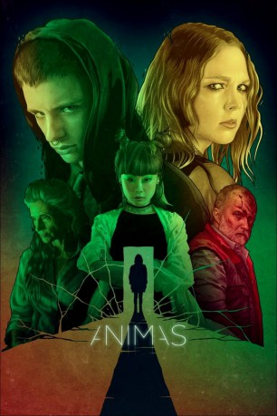

IMDB-Wertung: 4.6 / 10
IMDB-Wertung: 4.6 / 10  Metascore:
Metascore: 
Die Visionen einer Teenagerin nehmen immer erschreckendere Ausmaße an, als ihr bester Freund plötzlich eine Freundin hat und sein gewalttätiger Vater ermordet wird.
Alternativ: Ánimas
 IMDB-Wertung: 4.6 / 10 Metascore:
Die Visionen einer Teenagerin nehmen immer erschreckendere Ausmaße an, als ihr bester Freund plötzlich eine Freundin hat und sein gewalttätiger Vater ermordet wird.
Jahr: 2018
Dauer: 87 Minuten
FSK: 12
Land: Spanien Studio: FilmaxTonspuren: - , - ,
Untertitel: Deutsch, Englisch,
Auflösung: 1080p (1920x808) Größe: 2037 MB
Regisseur: Laura Alvea, Jose F. Ortuño
Drehbuch: Laura Alvea, Jose F. Ortuño
Soundtrack: Frederik Van de Moortel
Darsteller:
 Ángela Molina als Karla Berger
Ángela Molina als Karla BergerDatei: X:\2018(A-F)\Animas (2018, FSK12, 1920x808).mkv seit 10.03.2019
Festplatte: HD 2017(A-Z)-2018(A-F)
 Es gibt insgesamt 151 Filme in der Gruppe '2018(A-F)'
Es gibt insgesamt 151 Filme in der Gruppe '2018(A-F)'